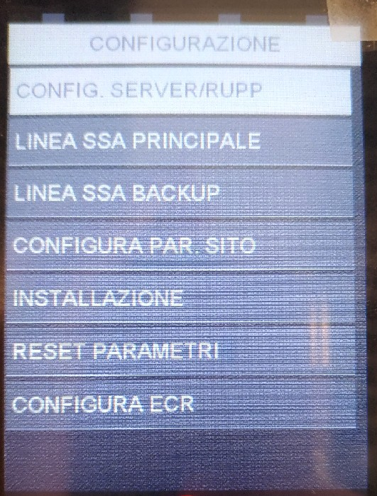
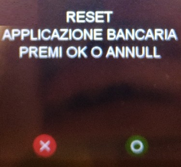
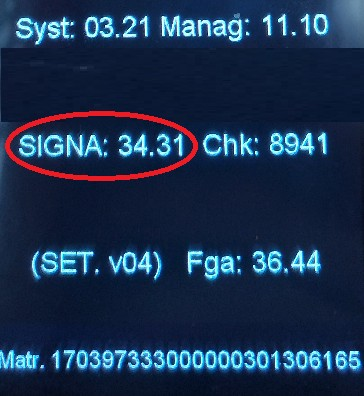

Manuale Installatore
Ingenico- Desk/5000
Stato
Utilizzato da
Redatto da RCC
Approvato da D.
Marta Salvaterra
Marco Torresani
VERSIONING
DATA
REVIS
IONE
MODIFICHE APPORTATE
AUTORE
22/08/17
1
Stesura iniziale
Salvaterra
19/02/2018
1.01
Inserita password reset firme
Locritani
Indice generale
1. Scopo e campo di applicazione...........................................................................................4
2. Accensione e Riavvio.........................................................................................................5
2.1. Accensione..............................................................................................................................5
2.2. Riavvio...................................................................................................................................5
3. Attivazione bancaria..........................................................................................................6
3.1. Parte Pos: configurazione SSA manager....................................................................................6
3.2. Parte Pos: Configurazione SIGNA.............................................................................................9
3.2.1. Signa: Configurazione.......................................................................................................9
3.2.2. Signa: invio firme rimaste sul pos......................................................................................9
3.2.3. Signa: rimozione firme rimaste sul possibile........................................................................9
3.3. Parte Amoney.......................................................................................................................10
3.4. Attivazione da pos.................................................................................................................11
4. Configurazione scambio importo.......................................................................................12
5. Reset Pos.......................................................................................................................14
5.1. Reset totale...........................................................................................................................14
5.2. Reset bancario......................................................................................................................15
6. Release CB2 e Release Applicazioni..................................................................................17
6.1. Release CB2..........................................................................................................................17
6.2. Release SIGNA......................................................................................................................17
1. Scopo e campo di applicazione
Questo documento descrive le modalità di utilizzo e configurazione del pos Desk5000.
2. Accensione e Riavvio
2.1.
Accensione
Accensione : collegare l'alimentatore del pos. Il pos si troverà nella schermata di idle dopo
circa 90 secondi.
2.2.
Riavvio
Riavvio: premere contemporaneamente il tasto giallo e il tasto punto.
3. Attivazione bancaria.
3.1.
Parte Pos: configurazione SSA manager

Per accedere al menù SSA manager e procedere con la
configurazione per l’attivazione:
- premere tasto Grigio (sopra il tasto rosso)
- selezionare SSA MANAGER
- selezionare CONFIGURAZIONE – psw 2010.
Nel menù configurazione si trovano 7 voci, queste
verranno descritte dettagliatamente nei punti 3-11
dell’elenco sottostante;
4. selezionare Config server rupp:
• Slot → selezionare lo slot interessato: Argentea per lo scambio importo seriale, Argentea
ETH per lo scambio importo tramite tcp/ip (maggiori dettagli nel capitolo 4);
• Merchant server: compare ARG-!-NTSV.AMON Premere tasto verde per confermare;
- RUPP: inserire il rupp assegnato, per la lettera iniziale utilizzare la tastiera visualizzata a
- video, per i valori numerici utilizzare la tastiera numerica del pos. Premere tasto verde
- per continuare.
- Quando il pos ritorna in slot, premere tasto rosso, dopo di che, verrà richiesto se si
- desidera salvare le modifiche, premere tasto verde per confermare.
5. Selezionare SSA Principale:
- selezionare Tipo Linea: scegliere tra Ethernet e confermare con tasto verde;
- selezionare Tipo Protocollo: scegliere tra SSL e Confermare con tasto verde;
- inserire indirizzo IP: i valori vanno inseriti dal tastierino del pos. Confermare con tasto
- verde;
- inserire Porta: i valori vanno inseriti dal tastierino del pos. Confermare con tasto verde;
- inserire Timeout socket: Confermare con tasto verde;
- inserire Timeout Ricezione: Confermare con tasto verde;
- il pos ritornerà in tipo linea, premere tasto rosso, dopo di che verrà richiesto se si
- vogliono salvare le modifiche. Confermare con tasto verde.
- Inserire Certificato: inserire 12
6. selezionare SSA backup:
- selezionare Tipo Linea: scegliere tra Ethernet e Confermare con tasto verde;
- selezionare Tipo Protocollo: scegliere tra SSL e Confermare con tasto verde;
- inserire indirizzo IP: i valori vanno inseriti dal tastierino del pos. Confermare con tasto
- verde;
- inserire Porta: i valori vanno inseriti dal tastierino del pos. Confermare con tasto verde;
- inserire Timeout socket: Confermare con tasto verde;
- inserire Timeout Ricezione: Confermare con tasto verde;
- il pos ritornerà in tipo linea, premere tasto rosso, dopo di che verrà richiesto se si
- vogliono salvare le modifiche. Confermare con tasto verde.

7. selezionare config. Par sito → verrà mostrato a
- display IP DINAMICO con scelte SI’ o NO.
- Selezionare NO , confermare con tasto verde e
- procedere con la configurazione:
- inserire indirizzo IP: è l’indirizzo Ip assegnato al
- pos, i valori vanno inseriti dal tastierino del pos.
- Confermare con tasto verde;
- inserire Subnet Mask: i valori vanno inseriti dal
- tastierino del pos. Confermare con tasto verde;
- inserire Gateway 1: i valori vanno inseriti dal tastierino del pos. Confermare con tasto
- verde;
- inserire Gateway 2: lasciare vuoto e Confermare con tasto verde;
- il pos ritornerà in IP dinamico e , premere tasto rosso, andare al punto 8
- Inserire Certificato: inserire 12
8. una volta completata la configurazione di config. Par sito viene richiesto
automaticamente se si vuole eseguire l’attivazione. Premere tasto verde per confermare
l’attivazione bancaria. Durante questa procedura vengono scaricati sul pos il/i termid
prediposti ad essere caricati sul pos. Tasto rosso se si vuole annullare l’operazione.

9. La voce INSTALLAZIONE permette di far partire l’attivazione manualmente.
10.La voce RESET PARAMETRI (vedere capitolo 5) permette di eliminare i parametri,
quelli di configurazione o solamente quelli bancari. Selezionare reset parametri,
• a display verrà richiesto di eseguire il reset completo: se si seleziona OK-tasto verde
verrà eseguita una cancellazione completa, cioè verranno eliminati sia i termid
presenti a bordo sul pos che i parametri di configurazione dell’ssa manager.
• Se si seleziona tasto rosso verrà richiesto di eseguire la cancellazione bancaria:se viene
premuto tasto verde viene eseguita un’attivazione parziale e cioè verranno eliminati
solamente i termid presenti sul pos, mentre verranno lasciati invariati i parametri di
configurazione.
11. La voce CONFIGURAZIONE ECR permette di eliminare/riconfigurare le impostazioni
per lo scambio importo (vedere capitolo 4 per maggiori dettagli).
- Se si seleziona disabilita e si preme tasto verde, il pos si riavvierà, al termine del quale
- non sarà più “attivo” lo scambio importo.
- Se si seleziona abilita, il pos si riavvierà e imposterà lo scambio importo con i valori di
- default dati segnalati dallo slot
3.2.
Attivazione manuale da pos
Per far partire il primo DLL:
1. premere Tasto Grigio
2. selezionare SSA MANAGER – CONFIGURAZIONE (2010)
3. selezionare INSTALLAZIONE e confermare con tasto verde (premere le frecce in basso
a destra sul pos per scorrere le varie opzioni della tabella)
4. Configurazione scambio importo
4.1.
CONFIGURAZIONE MANUALE

Lo scambio importo dipende dallo slot che si sceglie nel menù SSA
MANAGER:
• scegliere Argentea per lo scambio importo tramite seriale
Per modificare a mano le impostazione dello scambio importo:
premere tasto F1;
- selezionare Installatore (0107);
- selezionare Configura;
- selezionare Dati Linea ECR, verranno mostrate una serie
di voci, selezionandole sarà possibile accedere alla voce
desiderata ed eventualmente modificarla. Le voci principali
sono:
◦ protocollo: viene inserito il tipo di protocollo che viene
- utilizzato per lo scambio importo 17 o 25 (vedi
- parametri richiesti dal cliente);
- tipo linea: Ethernet;
- porta: 40001;
◦ Scambio imp. Obbl: se è su sì le operazioni di pagamento possono essere
- effettuate unicamente su si chiama il pagamento da cassa, se no il pos può fare
- pagamenti anche in standalone;
- Stampa ticket: su ECR
- Disabilita trs. Da pos: se sì non è possibile fare pagamenti direttamente da pos,
serve il comando da cassa, se no è possibile eseguire pagamenti in standalone.
4.2.
RESET CONFIGURAZIONE SCAMBIO IMPORTO
Per selezionare il LOGO caricato da File:
- premere TASTO F1
- selezionare INSTALLAZIONE (0107)
- selezionare CONFIGURA
- selezionare OPZIONI
- selezionare LOGO
- selezionare CARICATO DA FILE e premere tasto verde
- premere tasto ROSSO e poi tasto VERDE per salvare i dati Opzioni
4.3.
Reset totale
Sul pos desk/5000 è possibile resettare i termid e i parametri di configurazione dell’ssa oppure
solamente i termid.
Per resettare completamente il pos:
- premere TASTO GRIGIO
- selezionare SSA MANAGER – CONFIGURAZIONE (2010)
- 10.selezionare RESET PARAMETRI
• a display verrà richiesto di eseguire il reset completo: se si seleziona OK-tasto verde
verrà eseguita una cancellazione completa, cioè verranno eliminati sia i termid
presenti a bordo sul pos che i parametri di configurazione dell’ssa manager.

Per riconfigurare e attivare il pos vedere capitolo 3.
4.4.
Reset bancario
Per resettare solamente i termid e non i parametri di configurazione:
- premere TASTO GRIGIO
- selezionare SSA MANAGER – CONFIGURAZIONE (2010)
- selezionare RESET PARAMETRI
• Se alla richiesta di cancellazione parametri completa si preme tasto rosso il pos chiederà
di eseguire la cancellazione bancaria. A questo punto premendo tasto verde viene
eseguita un reset parziale e cioè verranno eliminati solamente i termid presenti sul
pos, mentre verranno lasciati invariati i parametri di configurazione.

Per rifare l'attivazione vedere i paragrafi 3.3 e 3.4.
5. Release CB2 e Release Applicazioni
5.1.
Release CB2
Per visualizzare la release CB2:
- premere tasto F1;
- selezionare SERVIZIO;
- selezionare RELEASE SW: la seconda linea mostra la release CB2 che è caricata a bordo
del pos.

5.2.
Release SIGNA
Per visualizzare la release SIGNA:
1. premere TASTO GRIGIO;
- selezionare SIGNA – 7446;
- selezionare SERVIZIO;
- selezionare RELEASE SW: la seconda riga mostra la release dell’applicazione SIGNA.
